Cette seconde partie de notre portrait de São Paulo montre une métropole face à ses défis internes : cette ville tropicale construite sur un haut plateau, riche d'apports migratoires variés, doit gérer d'importantes inégalités de richesse. Les défis à relever sont nombreux, comme le problème des violences urbaines ou celui des mobilités dans cette ville de vingt millions d'habitants.
São Paulo est la principale métropole brésilienne et elle s'oppose fortement sur beaucoup de plans au reste du pays dont elle constitue le centre économique. Toutefois, il existe à l'intérieur de cette agglomération géante une forte diversité interne, de plusieurs ordres : diversité des milieux naturels, qui a une forte influence – parfois positive, souvent négative – sur le fonctionnement urbain, diversité des usages du sol, diversité des populations dans ses origines et ses niveaux de revenus. Il en découle de très importants contrastes entre les différentes parties de la ville, à l'image de ceux qui marquent le Brésil dans son ensemble.
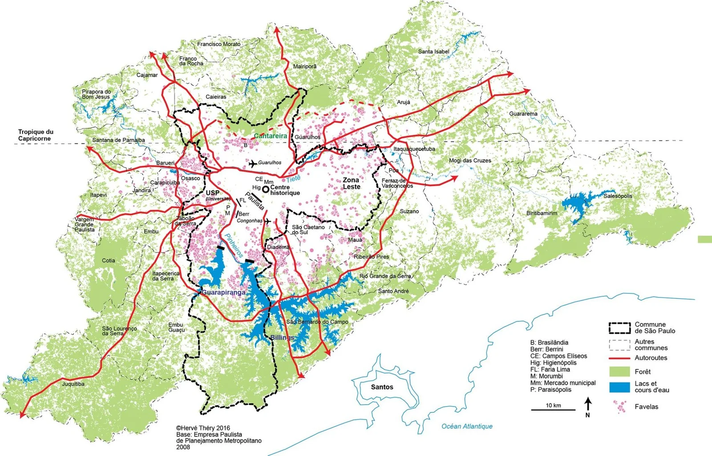
Comme la première partie de ce portrait de São Paulo, ce deuxième volet est essentiellement fondé sur un corpus de documents utilisables en classe, cartes et photos pour la plupart originales, produites ou recueillies en onze ans de séjour à São Paulo. Il est complété par des liens vers des billets de mon carnet de recherche Braises1, de ton plus libre mais qui peuvent néanmoins donner des éléments complémentaires utiles. Cette deuxième partie nous conduira d'abord à étudier l'environnement urbain de la ville, puis ses disparités sociales génératrices de violences, et la gestion de la circulation de 20 millions de personnes.
01Une métropole tropicale
La ville a été construite sur le revers en pente douce, vers l'ouest, d'un plateau qui domine le littoral, à l'est, par un talus abrupt de plus de 800 mètres. Le relief de ce plateau est moins accentué – et a créé bien moins de problèmes de circulation et de construction – qu'à Rio de Janeiro, mais sa topographie est loin d'être plane. Le « V » dessiné par les deux rivières qui le drainent, le Tietê et son affluent le Pinheiros, a certes facilité la construction de voies de circulation rapide sur leurs berges, mais il a fallu construire bon nombre de viaducs et de tunnels pour assurer une circulation aussi fluide que possible de part et d'autre de l'échine centrale parcourue par l'Avenida Paulista. Au nord de la ville, les hauteurs de la Cantareira ferment l'horizon. Le sud de la Zona Leste (« zone Est ») est lui aussi plus élevé et le sud de la commune, dont le tracé est très allongé dans cette direction, est étranglé entre les deux lacs de barrage Billings et Guarapiranga.
On notera une curiosité sur les deux cartes ci-dessous : le tracé circulaire laissé par l'impact d'une météorite, qui a creusé une profonde dépression, ensuite comblée par des sédiments et actuellement occupée en grande partie par une favela.
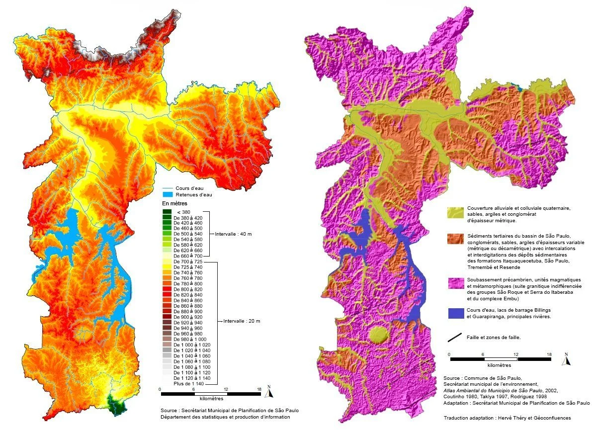
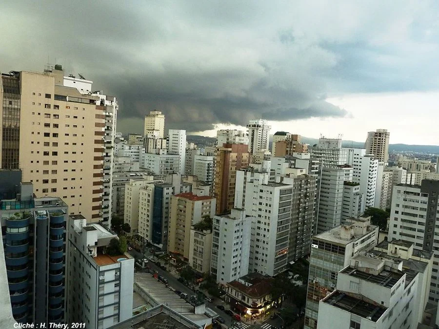
Le passage d'un front de pluie sur São Paulo, annoncé par l'arrivée de nuages sombres, amène le déclenchement de pluies aussi impressionnantes que celles de la mousson en Inde. Elles provoquent généralement de graves embouteillages à cause des inondations dans bon nombre de points bas, des accidents plus fréquents sur les sols mouillés et des pannes provoquées dans le système de signalisation. Aucune explication satisfaisante n'a été donnée au fait qu'à São Paulo toute pluie met des dizaines de feux rouges en panne, alors que ce n'est pas le cas dans la plupart des autres villes, même tropicales et moins riches.
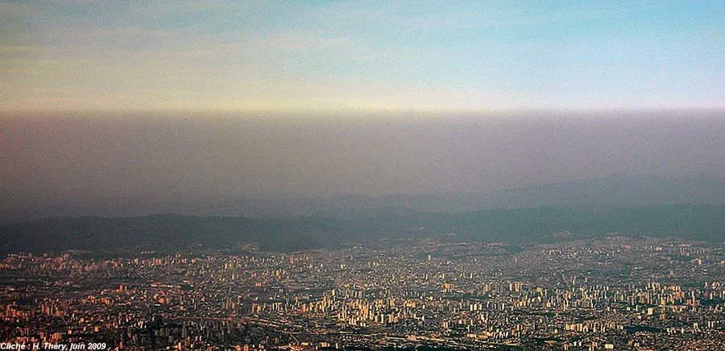
Ces pluies ont du moins l'avantage de réduire la pollution atmosphérique qui, certains jours de temps clair, couvre la ville d'une brume brune, le smog, bien visible depuis les hauteurs voisines. Les habitants de São Paulo (appelés Paulistanos pour les distinguer des habitants de l'État de São Paulo appelés Paulistas) pourraient certains jours répéter la boutade de Woody Allen qui affirmait adorer vivre à New York parce qu'il déteste l'air pur et aime voir ce qu'il respire.
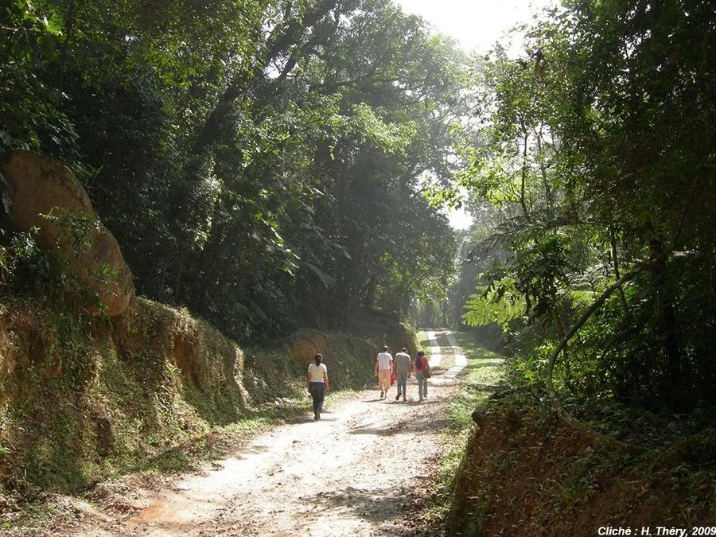
La photo ci-contre est prise depuis le massif de la Cantareira, qui domine la ville au nord et est occupé pour l'essentiel par un Parque Estadual (« Parc d'État », de l'État de São Paulo). Qui y circule peut avoir l'impression d'être bien loin d'une ville. Il y reste même, d'après ses gestionnaires, plusieurs couples de panthères sauvages, dont ils suivent les déplacements grâce aux colliers dotés de balises radio qu'ils ont réussi à installer à leur cou.
Au total, le bâti urbain est loin d'occuper toute la superficie de la région métropolitaine, dans laquelle il reste d'importantes surfaces forestières, principalement dans le sud, vers le rebord du plateau et la descente vers la mer. Intercalées dans le bâti résidentiel cohabitent des zones industrielles et commerciales, des favelas, des zones de loisirs et bon nombre de friches en attente de valorisation. L'ensemble donne au paysage des allures de patchwork inachevé.
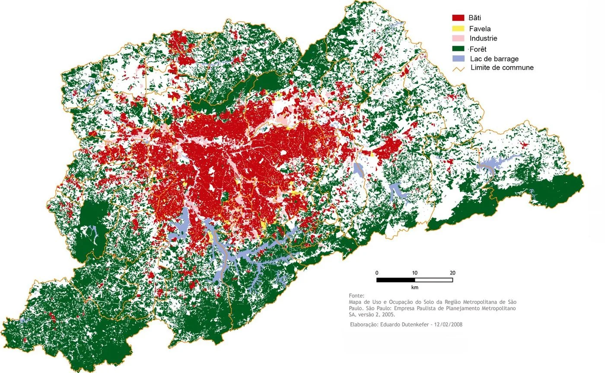
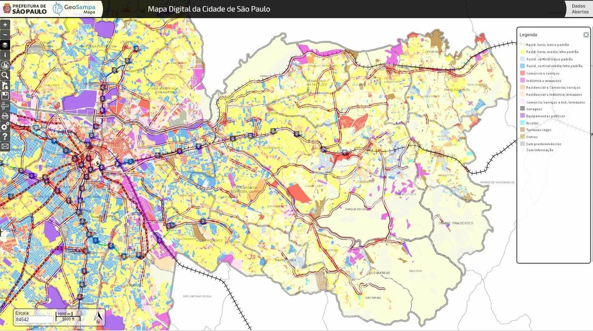
Pour connaître et représenter les milieux naturels, les types d'utilisation et les problèmes environnementaux de la commune de São Paulo, on peut avoir recours au remarquable S.I.G. développé par la mairie, Geosampa. C'est un site de composition de cartes numériques de la ville de São Paulo, d'usage très simple, qui permet de combiner entre elles 178 couches d'information, dont par exemple le type prédominant d'utilisation des terres (supérieur ou égal à 60 %), les équipements sociaux, les favelas et toutes les lignes de bus.
La carte ci-dessus (à droite) montre un exemple des résultats que l'on peut obtenir sur ce S.I.G. Elle couvre un espace qui comprend, à l'ouest, le centre-ville et, à l'est, la Zona Leste. Dans le centre dominent des quartiers résidentiels verticaux (en bleu sombre) et les quartiers horizontaux de qualité moyenne et haute (jaune plus foncé) entremêlés avec des zones industrielles et d'entrepôts (en rose) et des équipements publics (en mauve). La densité de desserte par les transports publics y est élevée, que ce soit par des lignes de métro ou de trains de banlieue. Dans la Zona Leste au contraire prédominent l'habitat horizontal et – secondairement – vertical de basse qualité (en jaune et bleu pâles), avec quelques équipements commerciaux (en rouge) et de rares zones industrielles à sa périphérie. Les transports s'y résument à deux lignes de train au centre et au nord et à des couloirs d'autobus qui assurent l'essentiel des déplacements.
02Diversité, disparités, inégalités
2.1Diversité des origines
Comme la diversité des types d'utilisation du sol le laisse percevoir, la ville de São Paulo est marquée par de très grandes disparités sociales. La diversité est d'abord celle des origines de ses habitants, dont la plupart sont des descendants de migrants venus de nombreux pays du monde au moment du boom du café : à la diversité des paysages répond la grande diversité humaine d'une ville cosmopolite (voir le complément ci-dessous). Cette diversité des origines donne à São Paulo une partie de son originalité et de son attrait, notamment la diversité gastronomique qui est vantée par les organismes chargés d'y promouvoir le tourisme : on y trouve en effet de très bonnes cantine et trattorie italiennes, de bons restaurants portugais et surtout des restaurants japonais haut de gamme, héritage des migrants venus de ces pays.
Une ville cosmopolite
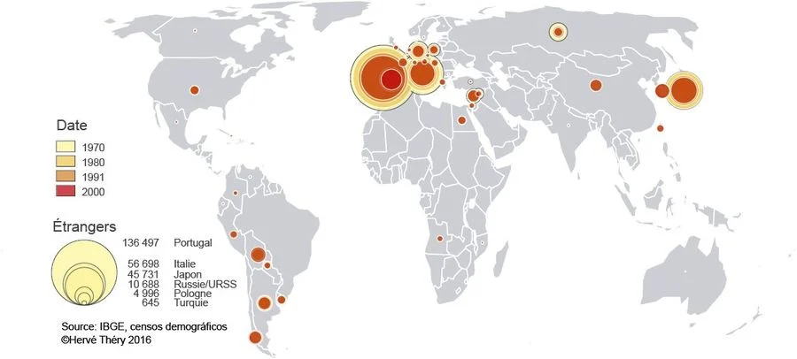
La très rapide croissance de la fin du XIXe siècle et du début du XXe siècle s'est faite principalement par l'afflux d'immigrants, appelés par les barons du café pour remplacer la main-d'œuvre esclave après l'abolition en 1888. Les plus nombreux sont venus d'Europe, principalement des Italiens, secondairement des Espagnols et des Portugais, mais São Paulo est aussi une ville japonaise puisque c'est là que s'est installée la plus importante colonie nippone hors du Japon. Arrivés à partir de 1908 pour travailler comme ouvriers agricoles dans les plantations de café, ces migrants japonais ont rapidement réussi à s'établir d'abord comme maraîchers puis, aux générations suivantes, comme commerçants en ville et enfin, parce que les parents ont toujours eu à cœur de faire faire des études à leurs enfants, par diffuser dans toute la société jusqu'aux plus hautes responsabilités.
Cette présence étrangère se voit dans le paysage de São Paulo et l'on trouve ses traces sur les enseignes et les annonces de festivités, les Français et les Italiens étant notamment présents dans les restaurants et les cantinas. Le brassage a été complété par des migrations, essentiellement intérieures. Les descendants d'Allemands ont migré depuis le Sud, où ils s'étaient installés, attirés par les secteurs d'affaires. Plus récemment, des migrants sont venus des pays andins, en particulier les Boliviens, qui trouvent à São Paulo des emplois sous-qualifiés et mal payés, mais qui leur permettent tout de même d'envoyer un peu d'argent à leurs familles et de rentrer ensuite avec un petit capital.
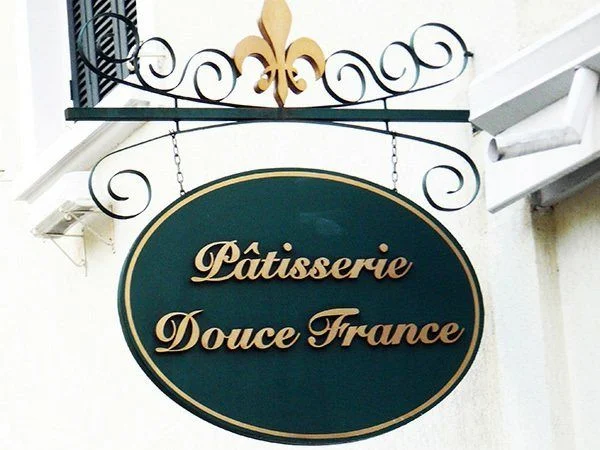
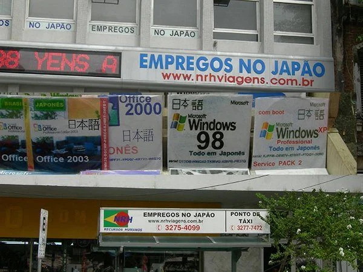
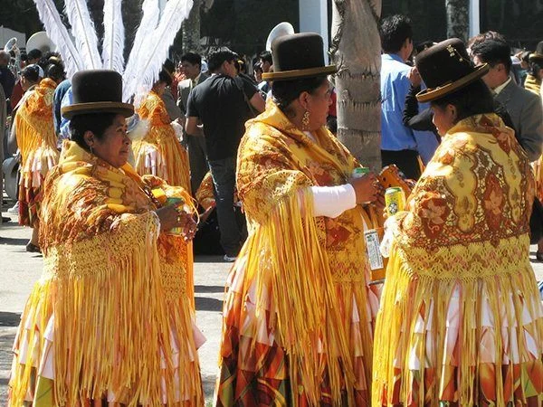
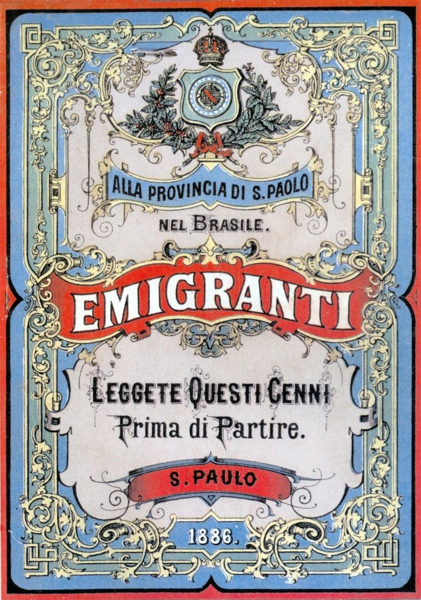
L'immigration italienne au Brésil a été très active entre 1880 et 1930. Selon les estimations de l'ambassade d'Italie au Brésil, vivent dans le pays environ 25 millions de descendants d'immigrés italiens, la plus grande population d'oriundi (descendance italienne) en dehors de l'Italie. Les Italo-Brésiliens sont principalement présents dans le Sud et le Sud-Est du Brésil, pour près de la moitié dans l'État de São Paulo.
Les Italiens ont commencé à immigrer en grand nombre au Brésil dans les années 1870, chassés par des changements socio-économiques dans le nord de la péninsule italienne, principalement la propriété des terres. L'immigration a commencé peu de temps après l'unification de l'Italie (1861), et donc l'identité nationale (italienne du moins, puisqu'ils étaient pour la plupart vénitiens) de ces immigrants a été forgée en grande partie au Brésil.
Le flux a atteint son apogée à la fin du XIXe siècle, mais vers 1900 commencèrent à paraître dans la presse italienne des articles sur les mauvaises conditions de vie des migrants italiens, qui ne pouvaient pas quitter les plantations de café où ils travaillaient, faute de paiement des dettes engagées par les frais de voyage. En 1902, le gouvernement italien interdit par le décret Prinetti l'immigration subventionnée de citoyens italiens au Brésil. Le flux d'immigrants diminua alors fortement : à partir de ce moment, tous les citoyens italiens qui voulaient émigrer au Brésil devaient pouvoir payer le billet eux-mêmes.
Tout autre est la diversité due aux niveaux de revenus extrêmement inégaux, qui créent des inégalités abyssales entre les quartiers riches et les quartiers pauvres qui cohabitent à courte distance les uns des autres dans la ville.
2.2Disparité de richesse
Le Brésil est un des pays les plus inégaux au monde (PNUD, Rapport sur le développement humain, 2015). Il n'est pas étonnant que ces inégalités se retrouvent – parfois exacerbées – jusqu'au cœur de sa ville principale. Pour les analyser, on dispose d'excellentes données grâce à un autre site remarquable de la Mairie de São Paulo, Infocidade. C'est une mine de données brutes, de graphiques et de cartes sur la commune de São Paulo (et malheureusement pas sur le reste de l'agglomération pour des raisons de limitation institutionnelle). Le service municipal de développement urbain (SMDU) y met à la disposition du public une vaste compilation d'indicateurs et d'informations dont les sources sont les services municipaux, mais qui inclut aussi des données importées d'institutions comme l'IBGE (statistiques fédérales), la SEADE (statistiques de l'État de São Paulo) et des ministères du Travail, de l'Éducation et de la Santé.
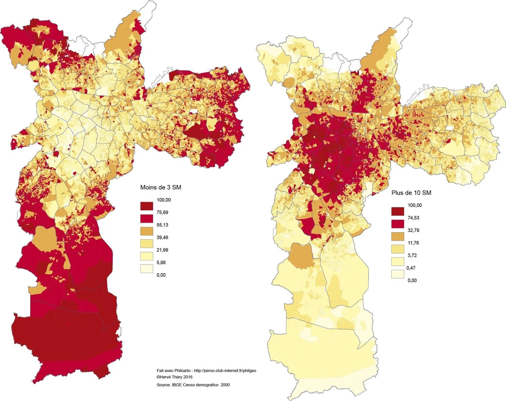
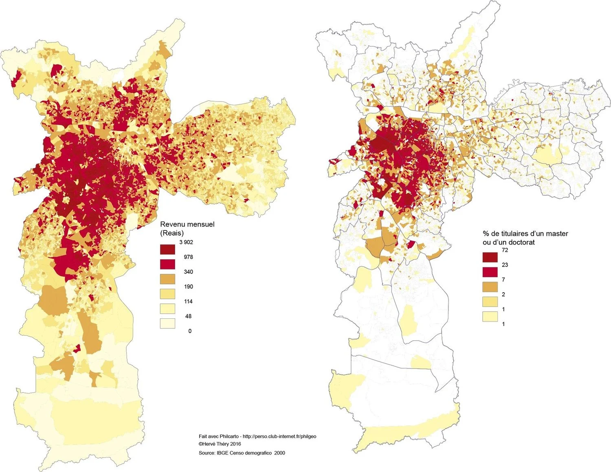
Un des contrastes les plus frappants est celui des niveaux de revenus entre des quartiers occupés principalement par des classes moyennes et aisées et les quartiers pauvres. Les deux cartes ci-dessus (à gauche) montrent avec la plus grande netteté une opposition centre-périphérie : le cœur de la ville est marqué par la présence de ménages disposant de revenus supérieurs à dix fois le salaire minimum, tandis que les extrémités du sud, du nord-ouest et de l'est sont occupées par des ménages dont les revenus sont inférieurs à trois fois le salaire minimum2. Les cartes suivantes (à droite) révèlent une bonne corrélation entre le revenu mensuel des ménages et le niveau d'études, mesuré ici par la proportion, dans la population, de titulaires d'un master ou d'un doctorat, dont le maximum est centré sur la zone où se situe l'Universidade de São Paulo (USP).
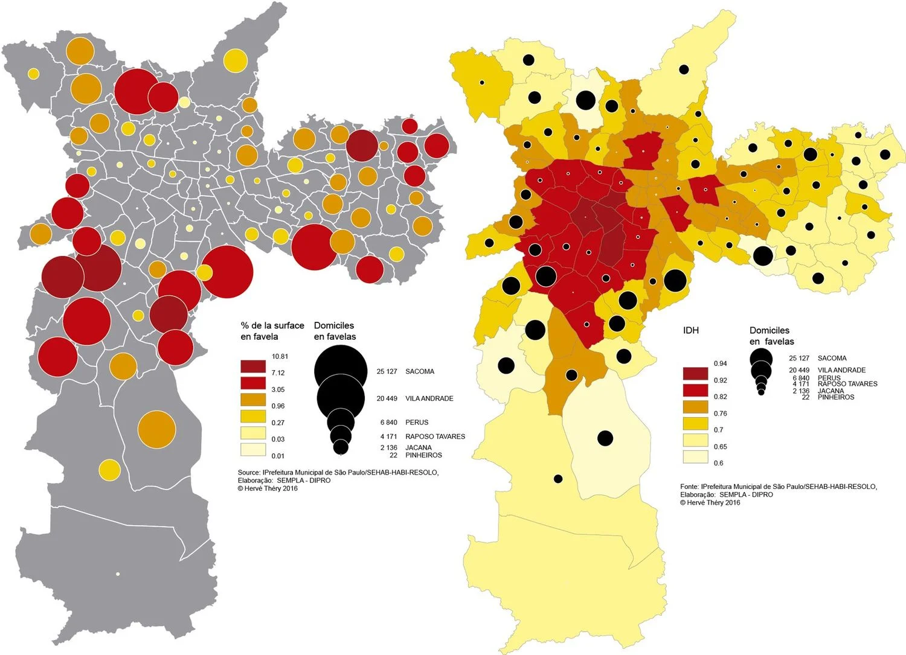
À l'autre extrémité de l'échelle sociale se situent les favelas, où vivent les plus pauvres. São Paulo s'est longtemps vanté d'en avoir moins que Rio de Janeiro ; ce n'est plus le cas aujourd'hui et c'est aussi dans la ville la plus peuplée du pays que le plus grand nombre de familles vivent dans ces quartiers précaires et insalubres.
Les cartes ci-contre montrent bien que les favelas constituent une sorte d'anneau intermédiaire entre les quartiers centraux, dont la population est la plus aisée, et les périphéries lointaines et peu peuplées de l'extrême nord, de l'est et du sud de la commune.
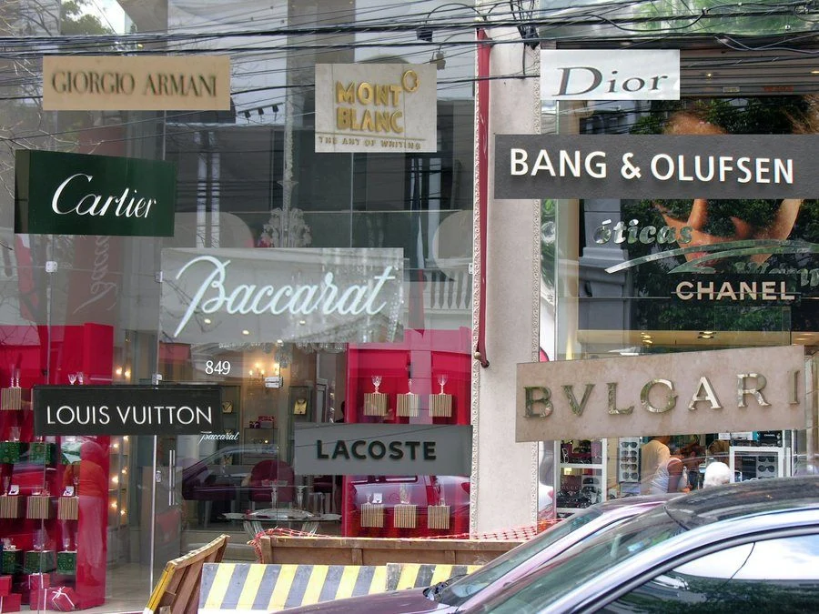
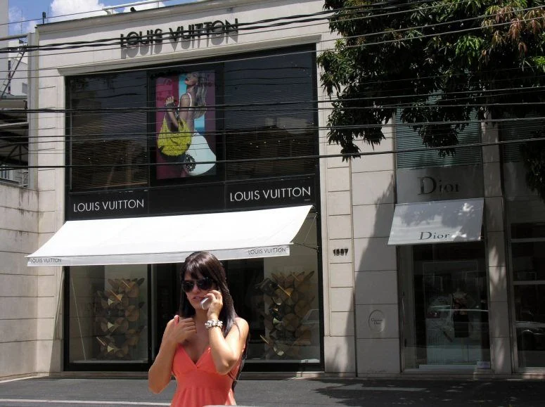
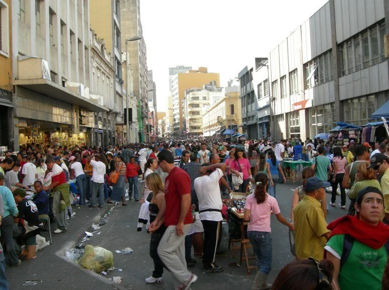
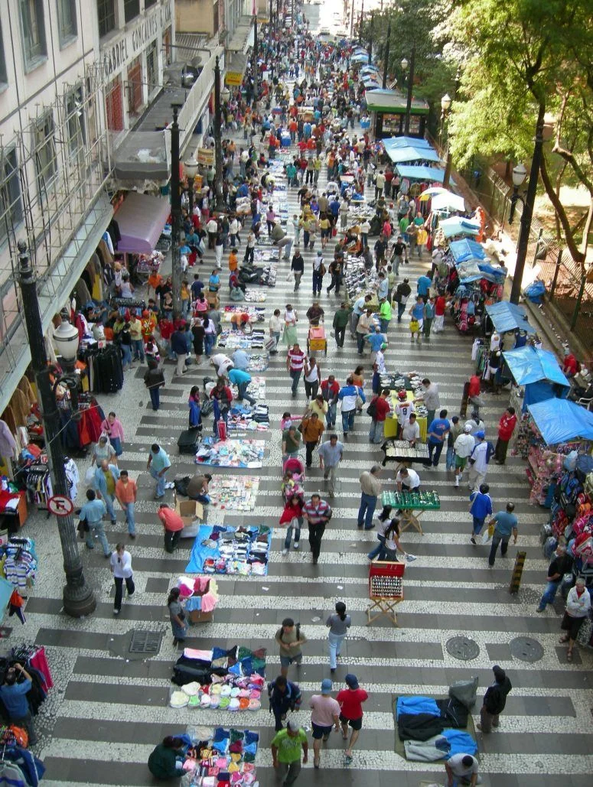
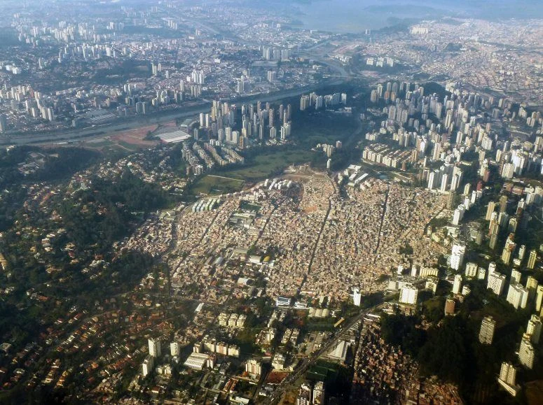
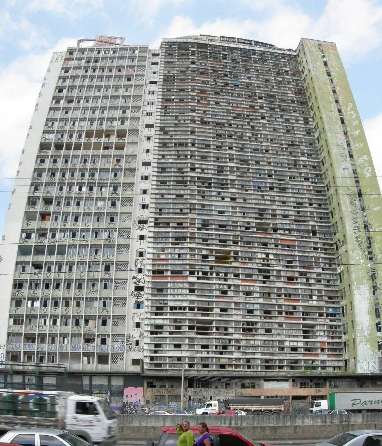
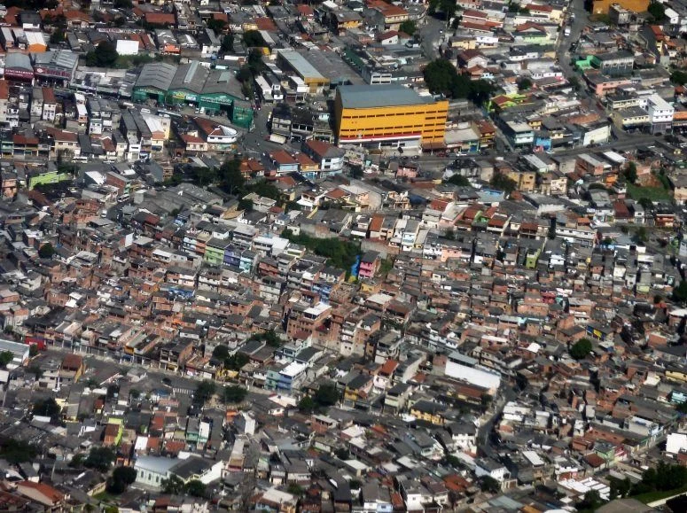
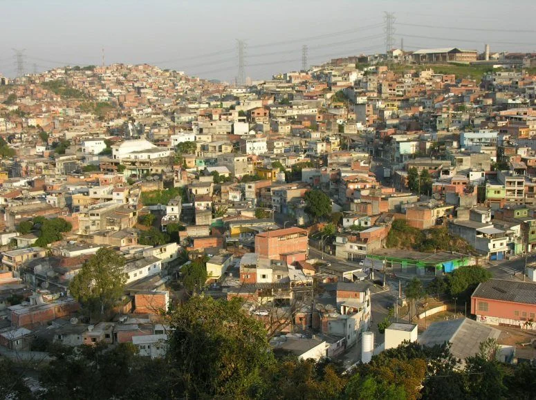
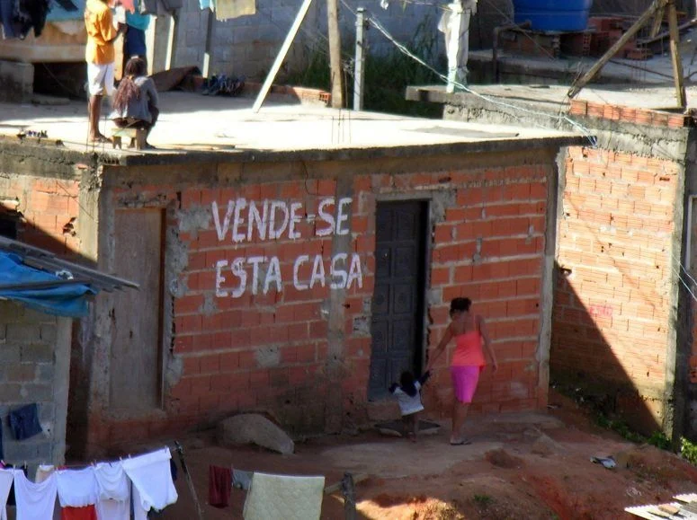
2.3Inégalités et violence urbaine
L'image de la ville de São Paulo, comme celle du Brésil en général, est souvent associée à celle de la violence, non sans raison. Le Brésil est, de fait, le pays dont le plus grand nombre de villes figurait en 2015 parmi les plus violentes au monde : sur les 50 villes ayant eu les pires taux d'homicides pour 100 000 habitants, 21 sont brésiliennes. La liste, publiée chaque année par l'ONG « Les citoyens pour la sécurité publique et la justice », prend en compte le nombre d'homicides pour 100 000 habitants dans les villes de plus de 300 000 habitants (ont été exclus les pays vivant des « conflits armés ouverts », comme la Syrie et l'Irak).
Le Brésil n'est pourtant pas le pire cas mondial : au Venezuela, le taux d'homicides pour 100 000 habitants était de 74,65 (contre un taux moyen de 45,5 dans la liste) et Caracas, sa capitale, est en tête du classement avec 119,87 meurtres pour 100 000 habitants. Les premières villes brésiliennes de la liste se situent aux 12e, 13e et 14e rangs (respectivement Fortaleza, Natal et Salvador), immédiatement suivies par Saint Louis (États-Unis), et huit d'entre elles y figurent entre le 21e et le 31e rang, Detroit s'intercalant entre elles au 28e rang. São Paulo ne figure pas dans la liste car la situation s'y est améliorée dans les deux dernières décennies. En 1970, on y comptait 9,7 homicides pour 100 000 habitants, 35 en 1999, et aujourd'hui le taux est d'environ 18,2 pour 100 000.
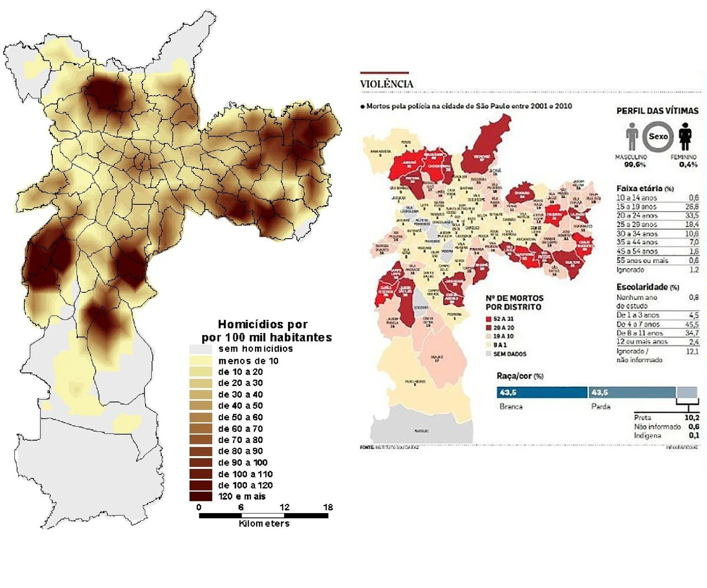
La pire flambée de violence qu'ait connue la ville s'est produite en 2006 ; elle avait commencé dans la nuit du 12 mai. Un groupe mafieux, le PCC (Primeiro Comando da Capital, Premier commandement de la capitale), pour protester contre un transfert de prisonniers parmi lesquels figuraient certains de ses chefs, avait tué 45 policiers et répandu un climat de terreur dans toute la région métropolitaine (incendie de stations-service, mitraillage de commissariats, sans victimes). Un couvre-feu informel avait alors paralysé São Paulo : les bus avaient cessé de circuler, les écoles et universités renvoyé chez eux leurs élèves et étudiants, les entreprises et commerces fermé leurs portes. Par la suite, les policiers ont pourchassé les membres des gangs responsables de ces actes criminels, et ont tué au moins 122 personnes (dont la plupart avaient un casier judiciaire vierge) dans des affrontements armés, qui se sont presque tous déroulés à la périphérie de la ville.
Il y a en effet une évidente géographie de la violence, avec des quartiers dangereux, principalement pour leurs habitants, et d'autres très calmes. Le centre d'études de la violence de l'Université de São Paulo a ainsi pu montrer que le taux d'homicides pour 100 000 habitants dans le centre de la ville était à des niveaux européens, tandis qu'à sa périphérie il atteignait le niveau de Bogotá ou de Los Angeles (carte ci-contre). La deuxième partie de celle-ci indique aussi que les victimes sont à 99 % des hommes, en général jeunes, et dont la couleur de peau est sensiblement plus sombre que celle de la population de la ville en général.
La localisation de ces morts est étroitement corrélée avec celle des favelas ; beaucoup sont liés aux règlements de compte entre bandes rivales pour le contrôle du trafic de drogue, ou aux affrontements avec la police. Une bonne partie des homicides sont en effet commis par celle-ci : 412 personnes ont été tuées par la police en 2015 à São Paulo, soit 26 % des 1 591 meurtres recensés dans la ville. En 2014, elle avait été responsable de 24 % des meurtres, en 2013 de 16 % et en 2005 de 5 %.
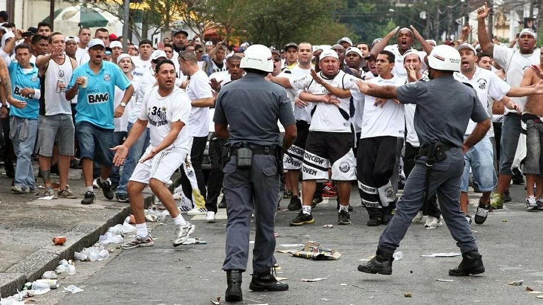
Les violences policières sont malheureusement une caractéristique récurrente du fonctionnement de la société brésilienne. La police militaire (qui ne dépend pas de l'Armée mais des autorités de chaque État ; elle est à peu près l'équivalent de notre gendarmerie) a une réputation justifiée de brutalité dans son traitement de la population au quotidien (par exemple le contrôle des supporters de football, ci-contre), qui va jusqu'à l'usage des armes à feu dans des situations de tension. C'est particulièrement vrai dans les quartiers populaires et plus encore dans les favelas, où les policiers militaires sont constamment sur leurs gardes et ont la gâchette facile quand ils se sentent menacés.
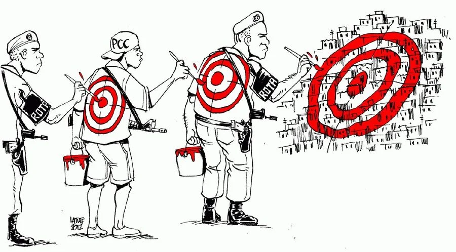
Se met ainsi en place un cycle de violences et de représailles que résume bien la caricature ci-contre : les policiers de la Rota (acronyme de Rondas Ostensivas Tobias de Aguiar, les rondes ostensives du bataillon de choc Tobias de Aguiar) s'attaquent en priorité aux membres de l'organisation criminelle PCC. Celle-ci ne manque pas de répliquer par des représailles tout aussi violentes, qui à leur tour mènent à des représailles de la police touchant toute la population de la favela.
03Se déplacer à São Paulo… ou rester bloqué
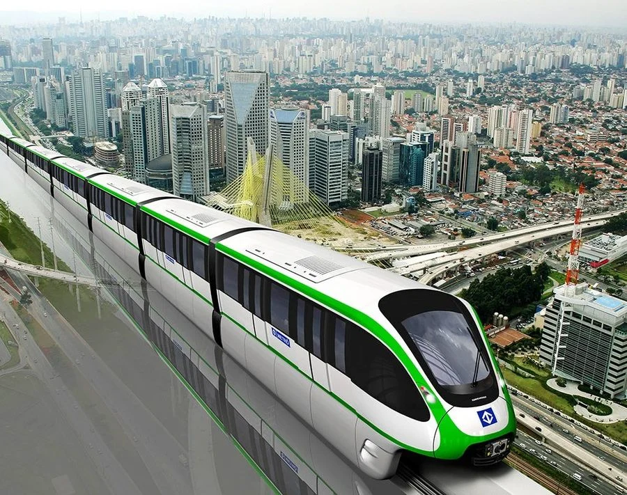
Très étendue, très contrastée, avec une forte différenciation entre les principaux quartiers d'activités économiques et les quartiers résidentiels, São Paulo aurait particulièrement besoin d'un bon système de transport. Ce n'est malheureusement pas le cas et les difficultés de circulation sont le principal inconvénient de la vie à São Paulo, celui qui affecte le plus la qualité de la vie pour ses habitants.
Il n'est pas rare que les habitants de quartiers plus périphériques comme la Zona Leste mettent plus de deux heures à rejoindre leur lieu de travail et autant pour en revenir le soir, perdant ainsi quatre heures par jour dans les transports.
3.1Des transports publics insuffisants
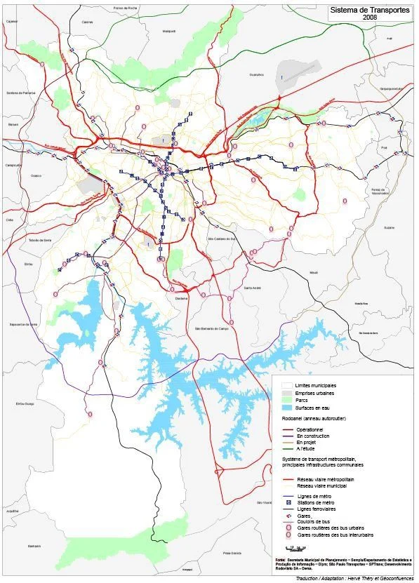
Le problème n'est pas tant la qualité des transports que la faible extension des réseaux à grande capacité. Le mode principal de transport collectif est le bus. Le métro n'a été mis en place que dans les années 1970 ; à ce jour il n'en existe que cinq lignes et la progression des travaux est très lente. Quelques-unes des voies de chemin de fer du temps du café ont été reprises par le trafic de banlieue, là aussi de façon très insuffisante. Des projets d'extension existent, notamment la construction d'un monorail futuriste (représenté en vue d'artiste plus haut), mais la perspective de sa mise en place est lointaine.
Au total, le réseau de transport public est très insuffisant pour desservir une métropole de plus de 19 millions d'habitants : la carte ci-contre montre que le réseau de métro est encore très limité. On peut à peine parler de réseau puisqu'il se limite à quatre lignes qui ne se croisent qu'en quelques points, et il serait injuste de le comparer avec les quatorze lignes qui desservent la ville de Paris, beaucoup moins étendue. La comparaison – toujours délicate – serait plus favorable avec Le Caire, qui a 3 lignes pour 15 millions d'habitants, mais moins avec Mexico, qui a commencé la construction de son métro à la même période que São Paulo mais avait déjà 226 kilomètres de lignes en 2013, alors que la métropole brésilienne n'en a que 74. Ce sont donc des milliers de bus qui assurent l'essentiel du transport et qui s'engluent dans les embouteillages avec les camions et les voitures particulières qui encombrent les rues de São Paulo.
3.2Un réseau routier saturé
Il est donc vital pour São Paulo de disposer de bonnes infrastructures routières, à la fois pour ses circulations intérieures et aussi pour donner accès au principal centre économique, industriel et de services du pays.
Pour réduire la congestion dans la partie centrale de la ville a été mis en place un système dit de rodízio, une circulation alternée aux heures de pointe. Il interdit l'accès au centre de l'agglomération, entre les deux rivières principales, le Tietê et le Pinheiros, de 8 h à 10 h et de 17 h à 20 h, le lundi aux voitures dont la plaque se termine par 1 ou 2, le mardi aux plaques 3 et 4, etc.
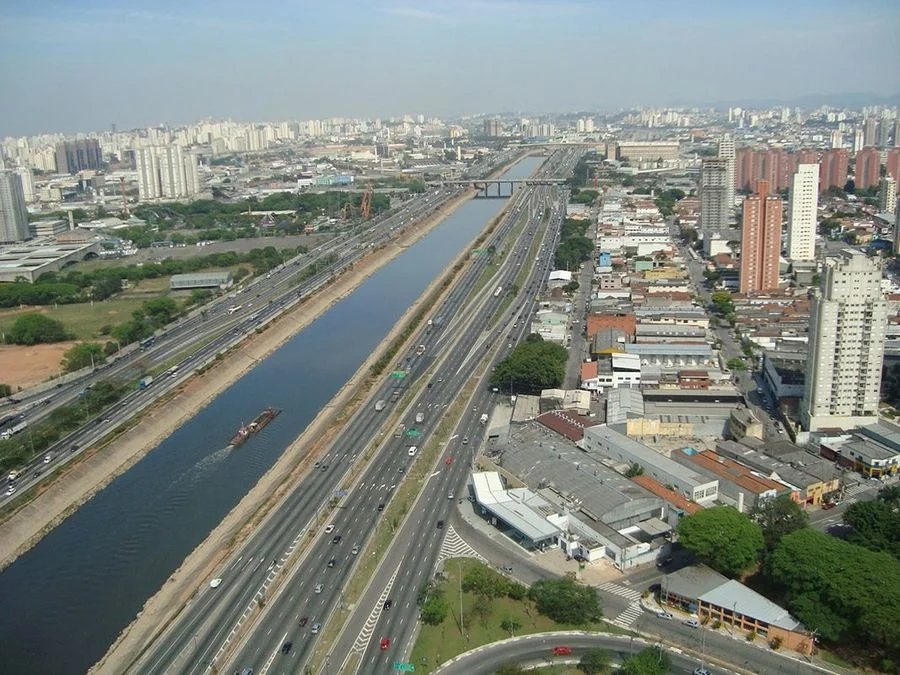
Cette limite a été choisie car c'est au long de ces rivières que se situent les voies de communication vitales pour la ville, paradoxalement appelées voies marginales (marginais, marginal au singulier, voies sur berges). Celle du Tietê ne compte pas moins de onze voies dans chaque sens sur certaines portions. Ce sont elles aussi qui distribuent la circulation provenant des autoroutes qui convergent vers São Paulo, remplissant ainsi une fonction comparable à celle du périphérique parisien. Il manque encore ici l'équivalent de l'A86, de la Francilienne ou de la M25 à Londres. Un anneau autoroutier plus lointain, le Rodoanel, est en construction mais encore inachevé (voir le complément ci-dessous).
La construction de ces infrastructures n'a pas été facile : il a fallu constamment élargir les marginais, sans grand succès puisque dès l'annonce de la mise en place de nouvelles voies, le trafic augmente et ne tarde guère à les saturer. On a calculé que si le rodízio avait réduit mécaniquement de 20 % le trafic dans le centre (en interdisant chaque jour la circulation de deux numéros de plaques sur dix), le nombre de voitures et camions a tellement augmenté depuis cette décision que le total de véhicules circulant dans les rues a progressé de 40 % rien qu'avec les huit numéros autorisés3.
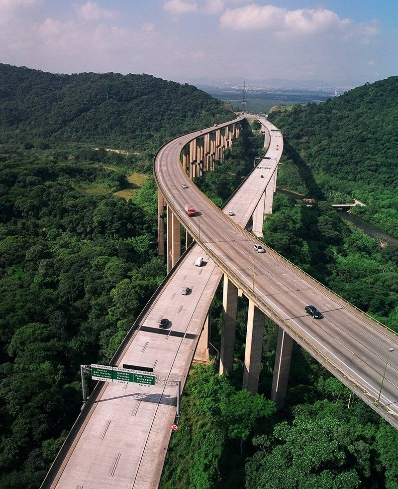
La construction des voies d'accès à la ville a elle aussi été difficile, notamment pour les autoroutes qui donnent accès au littoral, à 800 m en contrebas. La deuxième autoroute, construite pour soulager la première, la Rodovia dos Imigrantes (route des immigrants, ainsi nommée en mémoire des milliers de migrants qui ont fait ce trajet depuis le port de Santos), a même été une performance des ingénieurs brésiliens : on y circule presque entièrement sur des viaducs ou dans des tunnels pour toucher le moins possible à la forêt tropicale qui couvre les pentes de la Serra do Mar, alors que l'autoroute Anchieta, plus ancienne, avait été taillée à flanc de montagne.
La construction et l'extension constante de routes nouvelles sont indispensables car la flotte automobile de l'État de São Paulo est de loin la plus importante du Brésil, tant pour les voitures que pour les véhicules utilitaires. La capitale comptait déjà plus de 8 millions de voitures en 2015, et ce nombre s'accroît au rythme de plus de 800 par jour selon le Detran, l'organisme qui attribue les plaques minéralogiques.
| Véhicules (milliers) | 2000 | 2010 | 2011 | Progr. 2010-11 | Par jour |
|---|---|---|---|---|---|
| Bus | 58 | 42 | 43 | +1 364 | +4 |
| Camions | 152 | 159 | 155 | −4 385 | −12 |
| Utilitaires | 484 | 705 | 764 | +58 728 | +161 |
| Motos | 369 | 876 | 929 | +52 986 | +145 |
| Voitures | 4 000 | 5 093 | 5 213 | +119 960 | +329 |
| Autres | 64 | 79 | 82 | +3 321 | +9 |
| Total | 5 128 | 6 955 | 7 187 | +231 974 | +636 |
Avec cet accroissement constant de la circulation dans des rues toujours au bord du chaos, notamment les jours de pluie, il est habituel que les automobilistes et usagers des autobus téléphonent chez eux pour indiquer qu'ils n'ont aucune idée de l'heure à laquelle ils pourront arriver à la maison.
Le Rodoanel, un périphérique encore en construction
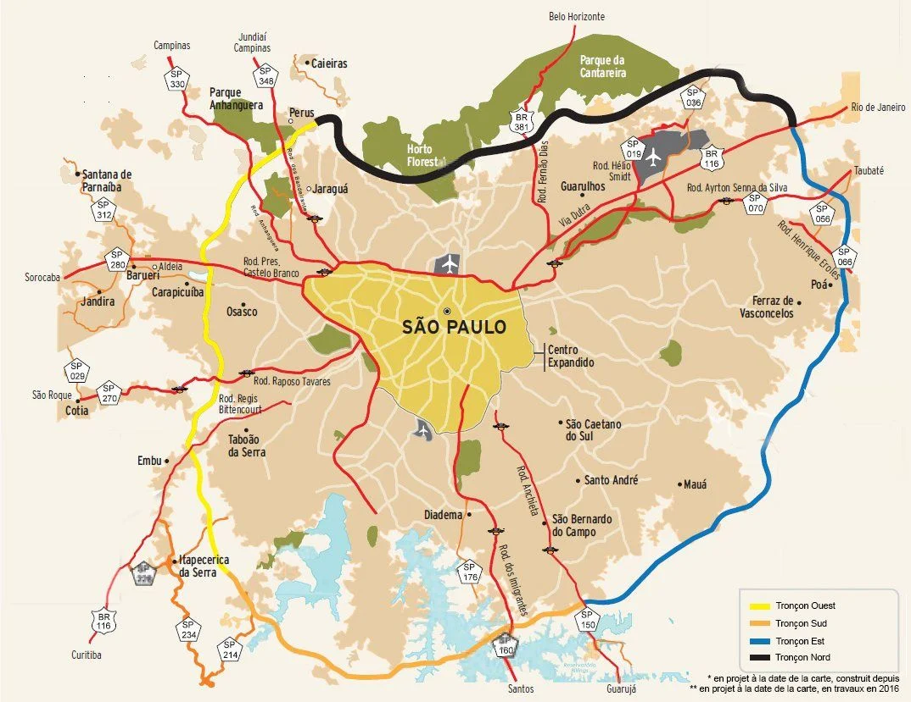
Comme les voies sur berges des marginais jouent à la fois le rôle de desserte locale et de liaison entre les autoroutes convergeant vers São Paulo, l'idée est venue aux responsables de la construction des infrastructures routières d'implanter un anneau autoroutier comparable à celui qui existe dans nombre de métropoles européennes et nord-américaines.
Le Rodoanel a donc été pensé comme un moyen de dévier les flux allant par exemple du port de Santos, au sud, vers Rio de Janeiro, à l'est, sans passer par le centre-ville. Sa mise en place se fait progressivement par tronçons : ceux de l'ouest et du sud ont été construits les premiers ; celui du nord est encore en cours car le choix de son tracé a été délicat : il fallait choisir de passer en deçà ou au-delà du massif de la Cantareira.
Sa construction a été un gigantesque chantier car les voies et les échangeurs ont été largement dimensionnés et la topographie en demi-oranges4 a exigé beaucoup de remblais et déblais. Par ailleurs, il a fallu en plusieurs points franchir les bras des lacs de barrage où est stockée l'eau qui servait naguère à produire de l'énergie et qui fonctionnent aujourd'hui comme réserve d'eau potable pour la ville. Il a donc fallu prendre de grandes précautions pour que les énormes volumes de terre remuée par les engins de chantier n'aillent pas polluer ces réserves d'eau, principalement lors de la saison des pluies, très violentes en climat tropical. Avec la collaboration des services de la Mairie et de l'État de São Paulo, les compagnies de travaux publics qui avaient remporté les marchés de construction ont mis en place un système d'alerte qui arrêtait automatiquement le chantier si une pollution était détectée dans les lacs.
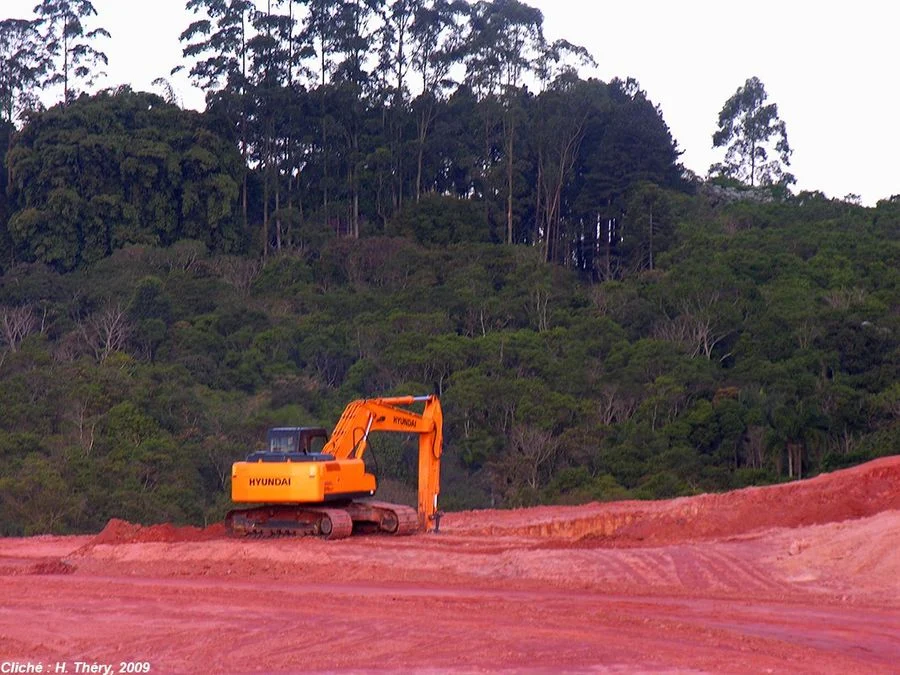
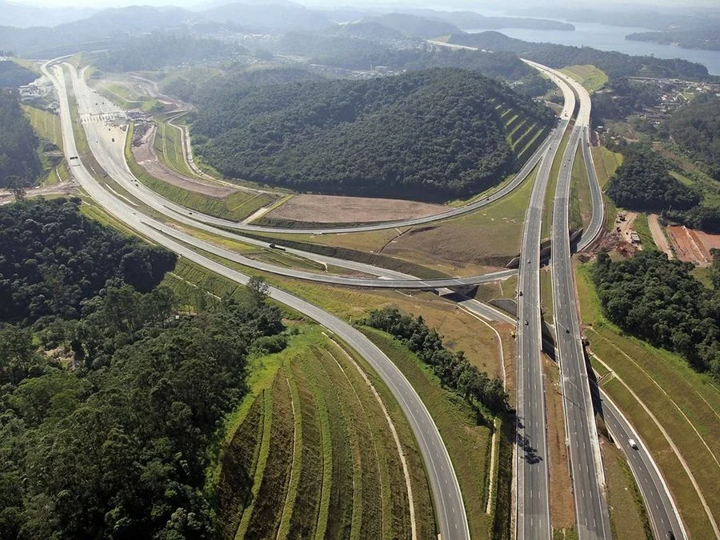
—Conclusion
Le Rodoanel (voir complément ci-dessus) est un bon exemple de la situation toute spéciale de São Paulo dans le pays. C'est à la fois une infrastructure d'intérêt national, car les axes qui y convergent relient au reste du pays le principal pôle économique national. Au sud, il donne accès au port de Santos, porte d'entrée de la plupart des importations du pays, et principal port de sortie pour des exportations dont le Brésil est le premier producteur mondial, comme le sucre, l'alcool combustible, le café et le soja (dans ce dernier cas conjointement avec le port de Paranaguá, dans le Paraná). C'est aussi un point de passage obligé pour les relations d'autres régions entre elles, par exemple entre Rio de Janeiro et le sud du pays, ou entre le Sud et le Nordeste.
Mais c'est aussi une voie d'intérêt local car il redistribue les circulations entre divers points de l'agglomération, banlieues industrielles et zones résidentielles, condominiums fermés des classes aisées à l'ouest et grands ensembles des classes populaires à l'est, littoral où se sont développées d'importantes infrastructures touristiques et intérieur d'où vient la nourriture nécessaire à la subsistance de 19 millions de personnes.
COMPLÉMENTS · BIBLIOGRAPHIE
Claire Gatinois, « João Doria, le nouveau maire ultralibéral de São Paulo », M Le magazine du Monde (libre accès), 10 octobre 2016.
Pierre Jaxel-Truer, « Sao Paulo, terre d'immigration japonaise », M Le magazine du Monde (édition abonnés), 23 juillet 2016.
Hervé Théry, « São Paulo, capital do Brasil », in Geografias de São Paulo, tomo 2, A metrópole do século XXI, Ana Fani Alessandri Carlos e Ariovaldo Umbelino de Oliveira org., Contexto, 2004, pp. 363-376 e 391-398.
Hervé Théry, Le Brésil, pays émergé, collection Perspectives géopolitiques, Armand Colin, 2e édition 2016, 280 p.
SITOGRAPHIE
Atlas do desenvolvimento do Brasil, « São Paulo » : statistiques et graphiques (en portugais).
Folha de São Paulo, quotidien paulista (en portugais).
Geosampa, site de composition de cartes numériques de la ville de São Paulo.
Infocidade : site de statistiques, graphiques et cartes de la Mairie de São Paulo.
1 Sa page d'accueil dit : « Braises vise à rendre compte par le texte et par l'image des transformations que vit, jour après jour, un grand pays émergent, le Brésil […] La veille sur les publications brésiliennes et la fréquentation assidue des habitants de ce pays en plein changement permettent en outre de tenter de faire comprendre comment ces dynamiques sont vécues, la culture brésilienne étant juste assez différente de la nôtre pour être fascinante, tout en restant accessible à un observateur européen ».
2 Qui vient d'être porté à 1 000 reais, soit 275 euros au cours de septembre 2016. Donc respectivement plus de 2 750 euros et moins de 825 euros par mois.
3 On sait par ailleurs qu'augmenter la capacité d'une route (en ajoutant des voies) augmente également les embouteillages (source).
4 Colline grossièrement hémisphérique modelée dans les altérites, typique des socles en milieu tropical humide (d'après Pierre George et Fernand Verger, Dictionnaire de la géographie, 1970, 2004).